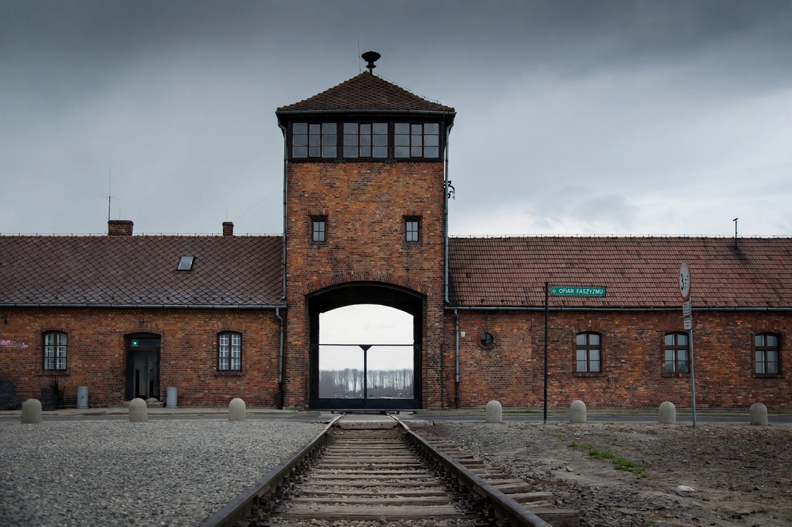

The Holocaust
From Wikipedia, the free encyclopedia

The Holocaust was the genocide of European Jews carried out by Nazi Germany and its collaborators during the Second World War: between 1941 and 1945, around six million Jews were systematically murdered — roughly two-thirds of Europe's Jewish population. The Nazis also persecuted and murdered millions of others, including Roma, Poles, Soviet prisoners of war, people with disabilities and political dissidents.
Background and escalation
Nazi antisemitism, rooted in Adolf Hitler's ideology of racial supremacy, moved from discrimination — the Nuremberg Laws of 1935 stripped Jews of citizenship — through the pogrom of Kristallnacht (1938) to mass murder after the invasion of the Soviet Union in June 1941, when Einsatzgruppen killing squads and police battalions shot over a million Jews in open-air massacres.
The Final Solution
At the Wannsee Conference of January 1942, officials coordinated the 'Final Solution': deportation of Europe's Jews to extermination camps in occupied Poland — Auschwitz-Birkenau, Treblinka, Bełżec, Sobibór, Chełmno and Majdanek — where most were killed in gas chambers on arrival. Others died in concentration camps and ghettos from starvation, disease and forced labour, or on death marches in 1945.
Liberation, trials and memory
Allied forces liberated the camps in 1945; leading Nazis were tried at Nuremberg, and Adolf Eichmann was tried in Jerusalem in 1961. The Holocaust is commemorated on International Holocaust Remembrance Day (27 January) and at memorials and museums worldwide, including Yad Vashem and the United States Holocaust Memorial Museum. Holocaust denial is a criminal offence in several countries.